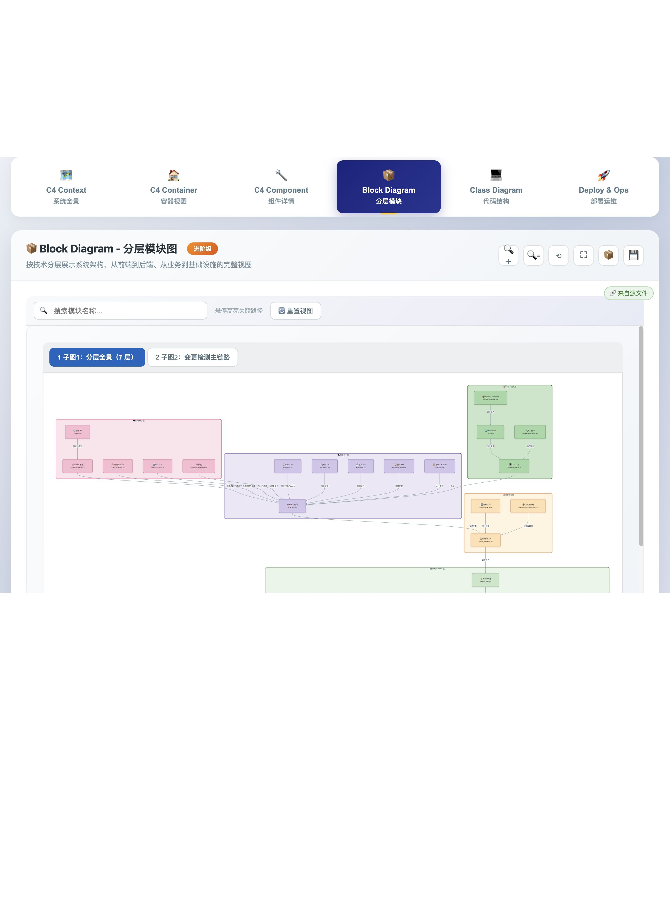
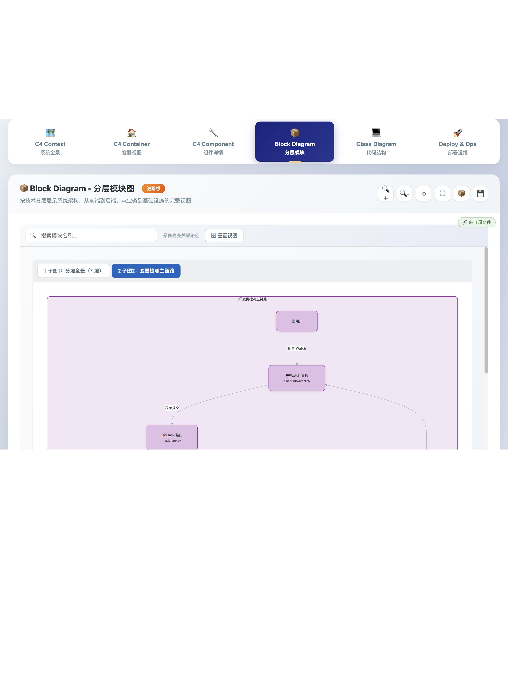

仓库：changedetection.io（git 5d9c7c6）· 主视图：block-diagram 分层模块 · 2026-08-29
实验：把用法5（纯 Viewer + 人手写 mermaid）里的「人」替换为 DeepSeek API（deepseek-chat），零草稿审阅直接出终稿，再做文件系统事实核查与浏览器渲染验证。
对照基线：eval/COMPARE-1-vs-LLM.md（用法1 ≈9 / DS+代码 ≈5.5 / DS-digest ≈3 / 规则 ≈2.5）
https://platform.deepseek.com 作废并轮换。prompt-audit.txt 在临时目录且不含 Key。工作区产物（本目录）均不含密钥。
ticker.py 等 5 处幻觉；
本次给 DeepSeek 喂了与人类工程师等价的材料——完整文件树 292 行（ground-truth 路径清单）+ 44 个关键源码摘录（约 16.6 万字符），并强约束「路径必须逐字来自文件树、存储技术以源码为准、终稿不留模板句」——
原报告点名的 5 类幻觉全部消失，且 check --drift 通过。
file_datastore →|持久化| watch_model 方向反了、dockerfile →|构建镜像| cli_entry 语义不成立）与信息密度（49 节点，超出 AGENT 建议的 15–25）。
即：「路径真实性」可工程化消除（喂全树 + 自动校验），「架构判断」仍需人微调。
| 项 | 原用法5 | 本次（引擎替换为 DeepSeek） |
|---|---|---|
| 谁写 mermaid | 人（通读仓库后手写） | DeepSeek deepseek-chat，temperature 0.2 |
| 能看到的上下文 | IDE 里全部文件，人自己决定看什么 | 完整文件树 292 行 + 44 个源码摘录（README/requirements/compose/Dockerfile + flask_app、worker、worker_pool、queue_handlers、notification_service、store、realtime、processors、model、api 等头部） |
| 规范约束 | AGENT.md block 视觉规范 | 同规范 + 「路径必须逐字来自文件树 / 存储以源码为准 / 终稿无占位句」硬约束 |
| 草稿确认 | 人自己就是审阅者 | 无——一次出终稿（模拟全自动替代手写） |
| 调用计量 | — | prompt 50,757 tok / completion 2,938 tok / 17.6 s |
产物：block-diagram.md（2 子图、7 层 subgraph、49 节点、59 条边且 100% 带中文标签、8 组 classDef）。
| 维度 | 用法1 Agent | DS+代码 原报告·10文件摘录 | DS-digest llm-generate | 规则2 | 本次 method5 全树+44摘录·零审阅 |
|---|---|---|---|---|---|
| 层是否齐全 | 9 | 8 | 3 | 3 | 9 |
| 节点路径真实 | 9 | 5（多处幻觉） | 6 | 6 | 9.5（41/41） |
| 边/数据流合理 | 9 | 7 | 2 | 2 | 6.5（几条方向/语义瑕疵） |
| 视觉规范（色/双行标签） | 9 | 8 | 5 | 7 | 8（节点色偏深、密度高） |
| 无模板占位 / 过 filled | 10 | 4 | 4 | 8 | 10 |
| 可直接交付（不经人工改） | 8 | 3 | 1 | 1 | 7 |
| 综合（可交付） | ≈9 | ≈5.5 | ≈3 | ≈2.5 | ≈7.5 |
方法：脚本从生成图提取全部 <small> 路径 token（41 个唯一值），逐个对照仓库文件系统解析；另对原报告点名的幻觉模式做正则扫描。
| 原 DS+代码 图中写法 | 文件系统核查 | 本次 method5 |
|---|---|---|
changedetectionio/ticker.py | 不存在（幻觉） | 未出现 |
changedetectionio/socketio | 应为 realtime/socket_server.py | 正确写作 realtime/socket_server.py + realtime/events.py |
notification.py | 应为 notification_service.py / notification/ | notification_service.py + notification/handler.py + notification/apprise_plugin/ |
processors/ai/ | 目录不存在 | 改为真实的 text_json_diff / restock_diff / image_ssim_diff |
datastore/ + SQLite 圆柱 | 实为 store/ 文件型 JSON datastore（orjson，见 file_saving_datastore.py） | store/__init__.py + store/file_saving_datastore.py；脚注明确「非 SQLite/MySQL，文件型 JSON」 |
| 末尾模板占位句 | 导致 filled 6 错 | 无占位句，check --filled / --drift 均 OK |
blueprint/ui/edit.py、processors/text_json_diff/processor.py、notification/apprise_plugin/（真实存在，apprise==1.9.9）、llm/evaluator.py 等。
将产物置入 Viewer 套件后起本地 HTTP 服务，通过电脑操作在默认浏览器打开 architecture_visualized.html?tab=block，浏览器自动化截图并读取控制台：零 Mermaid 报错，两张子图均正常渲染。


file_datastore →|持久化| watch_model / app_model 方向反了（实际是 model 调 store）；dockerfile →|构建镜像| cli_entry(changedetection.py) 语义不成立；api_watch →|创建/更新 Watch| flask_app 实为蓝图注册进 Flask。路径核查查不出这类问题。lib/llm-generate.js 的输入从 scan() 摘要 JSON 升级为「完整文件树 + 关键源文件摘录」，并在生成后自动执行路径存在性校验（本次 factcheck 脚本逻辑可直接产品化：提取 <small> 路径 → 解析文件系统 → 幻觉即打回重生成）。
这能把用法6 从 ≈3 拉到 ≈7.5；剩下的边语义问题交给「草稿确认」闭环——LLM 替代手写劳动力成立，替代验收不成立。
python3 -m http.server 后开 architecture_visualized.html?tab=block）/tmp/arch-compare/（method1-cursor-agent / method6-deepseek-enriched / method6-deepseek-full / method2-rules）复测脚本（临时目录）：上下文构建 + DeepSeek 调用 m5-generate.mjs；路径事实核查 m5-factcheck.mjs。